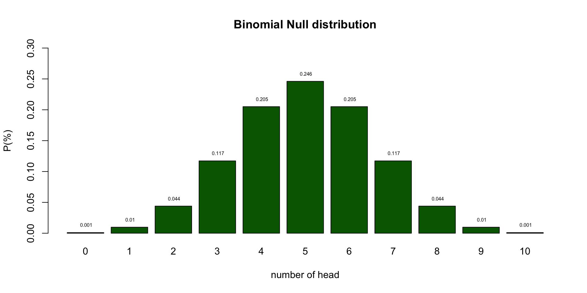

Statistical Reasoning
Introduction to statistical reasoning
Klinkenberg
University of Amsterdam
2025-09-01
Statistical Reasoning
Course setup
- Lectures: On campus / Online / Video recording
- Preparatory Assignment: Submit and reflect in canvas
- Tutorials: For your support and in class progress check (you can mis max 3 tutorials)
- Exam: Knowledge and skills
in class progress check

Grading
\(\text{Final grade} = 0.9 \times \text{exam grade} + 0.1 \times \text{Preparatory Assignment}\)
- Exam
- Preparatory Assignment (VO in Dutch)
Preparatory Assignment
- 11 PA’s/VO’s in total
- You need to have done the PA with effort and reflect on your progress.
\[\text{PA points} = \frac{\text{Number of PA's done}}{11}\]
Learning
Course changes
Changes based on feedback, course evaluation, redesign and DEI project.
- Textual instructions added to all SPSS content in the book.
- ANOVA chapter example changed from Jolie & Clooney to Vaccine acceptance to be less gender stereo typed.
- Moderation with regression chapters, analysis now all done with PROCESS
Organisational changes
- Tutorial attendance now mandatory (mis max 3)
- Resit now in March
Reasoning in statistics
Statistical Literacy
- Knowledge (Basic understanding of concepts)
- Identify
- Describe
- Skils (Ability to work with statistical tools)
- Translate
- Interpret
- Read
- Compute
Statistical Reasoning
- Understanding
- Explain why
- Explain how
Statistical thinking
- Apply
- What methods to use in a specific situation
- Critique
- Comment and reflect on work of others
- Evaluate
- Assigning value to work
- Generalize
- What does variation mean in the large scheme of life
Empirical Cycle
By Adriaan de Groot
The components
- Observation
- Idea for hypothesis
- Induction
- General rule
- Hypothesis
- Deduction
- Expectation / Prediction
- Operationalization
- Testing
- Test hypothesis
- Compare data to prediction
- Evaluation
- Interpret results in terms of hypothesis
Explained by Annemarie Zandscholten
Experiment
Heads

bit.ly/2j54A2U
Emperical Cycle
- Observation Patiënt is showing post traumatic symptoms
- Induction Can we diagnose PTSD
- Deduction \(H_0\): P: fair coin → C: patiënt is balanced
- Deduction \(H_A\): P: Unfair coin → C: patiënt is unbalanced
- Deduction \(H_A\): P: data \(\neq\) EV → C: is unbalanced
- Testing Choose \(\alpha\) and Power
- Evaluation Make a decision
Null distribution
Let’s analyse the null distribution of the results.
Distributions
What is the difference between
- Population distribution
- Sample distribution
- Sampling distribution
Binomial distribution
\[ {n\choose k}p^k(1-p)^{n-k}\]
\[ {n\choose k} = \frac{n!}{k!(n-k)!} \]
With values:
Probabilities
Testing
I landed 2 times head. Can we conclude PTSD?
- As you can see from the distribution of healthy coins, we cannot conclude that by definition.
- What we can do is indicate how rare 2 is in a healthy population.
Null distribution
End
Contact


Statistical Reasoning 2025-2026